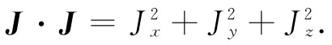
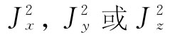
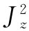
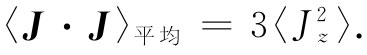
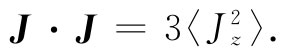
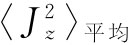
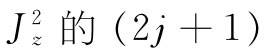
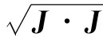
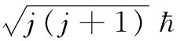

上面已向你们提供了关于磁矩与角动量之间的关系式。这很令人高兴。但这磁矩和角动量在量子力学中又意味着 什么呢？为了保证人们懂得到底指的是什么，在量子力学中，事实证明最好是用像能量这种概念来定义如磁矩那样的东西。现在，要用能量来定义磁矩并不困难，因为磁矩在磁场中的能量按照经典力学为μ·B。因此，下述定义已为量子力学所采用：如果我们算出一个系统在磁场中的能量并发现它正比于该场强（对于弱场来说），那么这个比例系数就称为磁矩在该场的方向上的分量（目前我们无需对工作要求得那么精致，可以仍然按照那种普通的、在某种程度上是经典的意义来考虑磁矩）。
现在我们想要讨论量子力学中的角动量概念——更确切地说，是量子力学中所称为角动量的一些特性。你知道，当你着手新型的定律时，就不能只假定每一个词都要表示与以前完全相同的东西。比方，你可以这样想：“呵，我懂得了角动量是什么。它是会受转矩改变的那种东西。”但转矩又是什么呢？在量子力学中我们不得不对一些旧物理量赋予新的定义。因此，合理地说，最好就是用诸如“量子角动量”或其他相似名称来称呼它，因为它是在量子力学中定义出来的角动量。但如果你在量子力学中能够找到一个量，在系统变成足够大时与我们关于角动量的古老概念相同，则去发明一个额外字眼就没有什么用处了。我们也可以同样叫它作角动量。有了这么一点认识，即将加以描述的这种古怪东西也就是 角动量了。它是在大系统中我们用经典力学观点认为是角动量的那种东西。
首先，我们取一个角动量守恒的系统，诸如完全处在真空中的一个孤立原子。于是像这样的东西（像绕自己的轴自转的地球）在通常意义上来说，它有可能环绕人们所任意选取的轴旋转着。而对于给定的自旋，可能会有许多不同的状态，全都具有相等能量，每一个“态”相当于角动量轴的一个特定方向。所以在经典理论中，对于给定的角动量，就有无数个可能的态，它们全都有相同能量。
然而，结果是在量子力学中出现了若干件奇怪的事情。首先，在这样的系统中能够存在 的状态数目是受限制的，即只存在有限个数目。如果系统很小，这有限的数目也很小，但如果系统大了，则这个有限的数目便变得非常非常大。其次，我们不能 通过给出其角动量方向 以描述一个“态”，而只能通过给出沿某一方向——诸如z方向——的角动量分量 来给予描述。按照经典理论，具有给定总角动量J的物体，对于其z分量该可以有从+J与-J的任何数值。可是按照量子力学，角动量的z分量只能取某些分立数值。任何具有一定能量的给定系统——一个特定原子、原子核或任何一种东西——都各有一个特征数目j，而它的角动量的z分量就只能有下列这组数目中的一个：
jћ （j-1）ћ （j-2）ћ … -（j-2）ћ -（j-1）ћ -jћ （34.23）
最大的z分量为j乘ћ，次大的是减少一个ћ单位，一直减少到-jћ为止。这数值j叫作“该系统的自旋”（有些人却叫它做“总角动量量子数”，但我们将称之为“自旋”）。
你或许会担心我们现在所谈的可能只对于某一“特殊”z轴才正确，但并非如此。对于一个自旋为j的系统，沿任何 轴的角动量分量只能取式（34.23）中所列数值之一。虽然这看来很神秘，但仅要求你们暂且接受它，以后我们才回来讨论这一点。你至少可能乐于听到z分量会从某一数值变到负的相同 数值，使得我们至少无需去决定哪一个是z轴的正方向（当然，假如我们曾经说过它要从+j变到负的某个其他数值，那么就会是无限神秘的，因为在指明了其他方向后，我们不可能再定义z轴）。
于是，如果角动量的z分量必须从+j起按整数递减到-j，那么j就必须是整数了。非也！并不尽然，j的二倍才必须是整数，只有在+j与-j之间的差值 才必须是整数。所以，一般说来，自旋j或者是整数或者是半整数，取决于2j是偶数还是奇数。例如，像锂那样的核，它具有3/2的自旋，即j=3/2，于是绕z轴的角动量，以ћ为单位，就是下列诸值之一：
+3/2 +1/2 -1/2 -3/2.
总共有四个可能态，若该核处在无外场的真空中，则每个态具有相同能量。如果我们有一个自旋为2的系统，则按h为单位角动量的z分量就只能有下列诸数值：
2 1 0 -1 -2.
如果你数一下对给定的j共有多少个态，则共有（2j+1）个可能性。换句话说，如果你将能量和自旋j都告诉我，结果表明，正好存在（2j+1）个具有那种能量的态，每个态相当于角动量分量的一个不同的可能值。
我们想要加上另一事实。如果你随意选取一个已知其j值的原子而测量其角动量的z分量，那么你会获得可能数值中的任何一个，而每个数值是同样 可能的。所有的态实际上都是单态，而每个态同任意另一个态恰恰是一样。在世界上每个态都各具有相同“权重”（我们假定并没有预先挑选出一个特殊样品）。顺便说说，这个事实有一个简单的经典类似。如果你按照经典方式提出这同样的问题：若取一个都具有相同总角动量的随机系统样品，那么对于某个特定角动量分量的可能性究竟如何呢？——答案是，从极大至极小的所有数值都具有同样的可能（你可以不难把它计算出来）。这一经典结果就相当于在量子力学中（2j+1）个可能性具有相等的概率。
从迄今我们所得到的结果，还能够得出另一个有趣而有点令人吃惊的结论。在某些经典计算中，最终结果中出现的量是角动量J大小的平方 ——换句话说，那就是J·J。结果是，通过利用经典的计算结果和下述的简单法则：由j（j+1）ћ2 取代J2 =J·J，就往往能够猜出 正确的量子力学公式。这一法则通常是有效的，而且往往但并非 永远会给出正确结果。我们可以提供下面的论据来证明为什么你可能预料到这一法则会起作用。
标积J·J可以写成

由于它是标量，所以对于自旋的任意取向它都应相同。假定我们随机地选择任何给定的原子系统的样品并作出对 的测量，那么对每一个的平均值 都应该相同（对任何一个方向都不存在任何特殊区别）。因此，J·J的平均值就恰恰是任一分量的平方——比方说 ——平均值的三倍：

但由于J·J对所有一切取向都相同，所以它的平均值当然也就刚好是它的恒定值，于是我们有
 （34.24）
如果我们现在说，对于量子力学也将采用同样的式子，则可以容易地求得 。我们只需取 个可能值之和并除以总数：
将把它留给你们自己去证明，式（34.25）加上式（34.24）就会给出这个普遍结果：
J·J=j（j+1）ћ2 . （34.26）
虽然我们可能从经典理论想到J的z分量最大可能值会恰好等于J的大小——也即 ——但按照量子力学Jz 的极大值却总要比这略为小些，因为jh总是小于 的。所以角动量从不“完全沿z方向”。